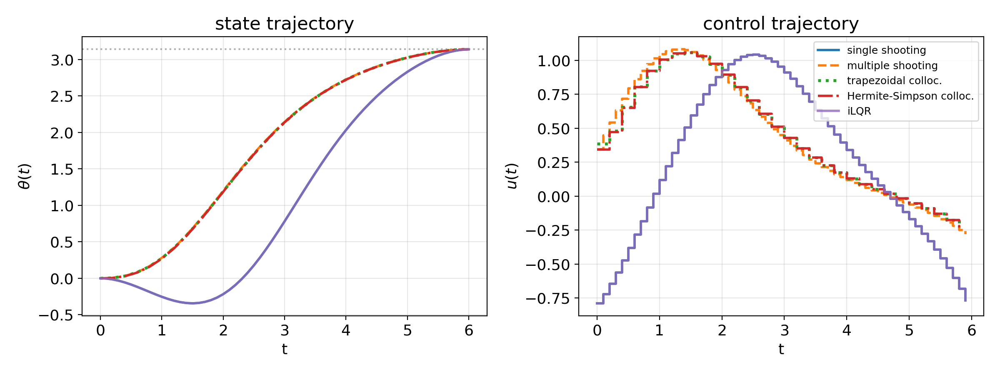
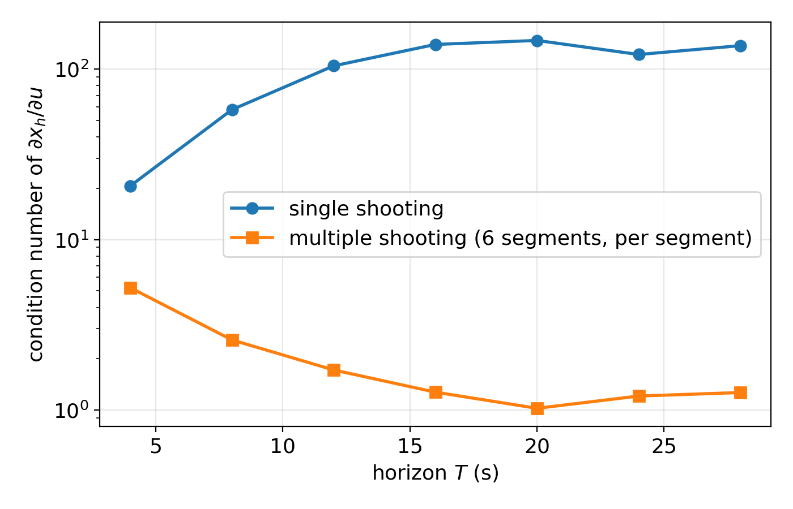
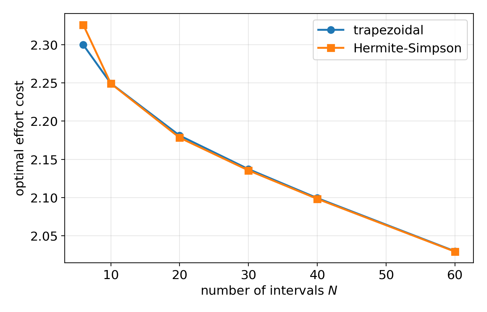
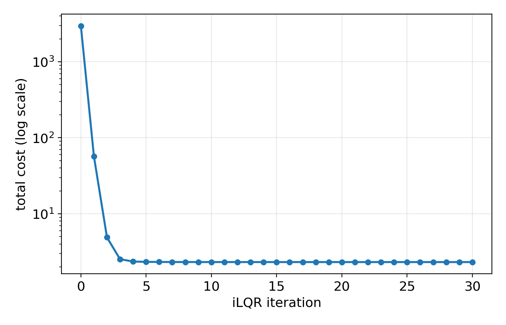
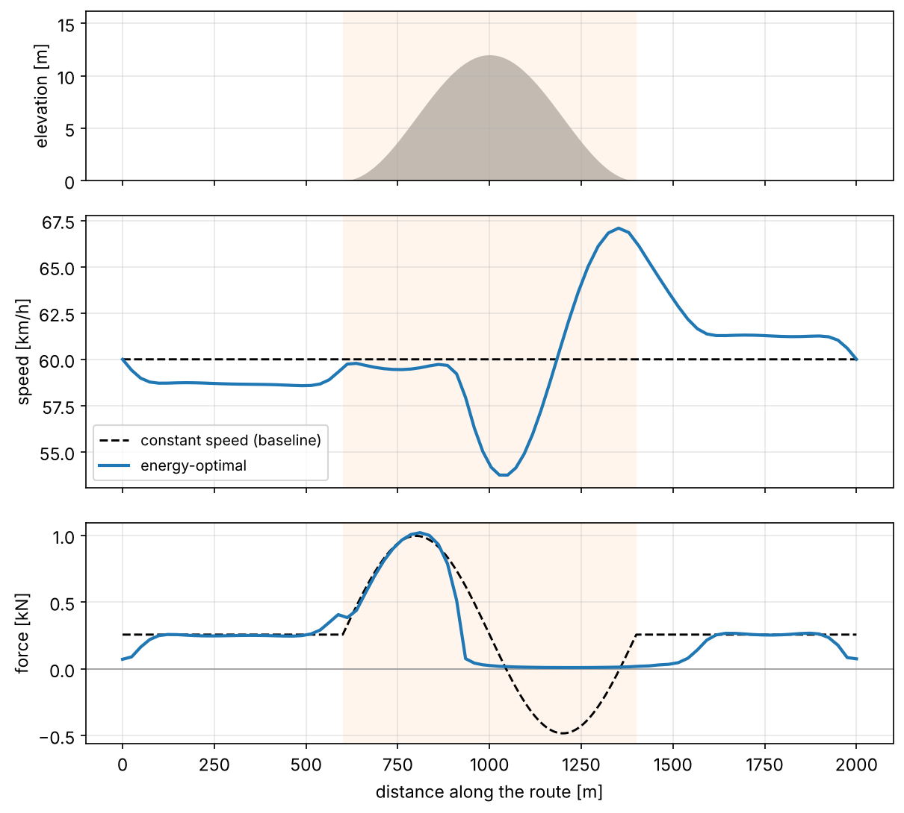
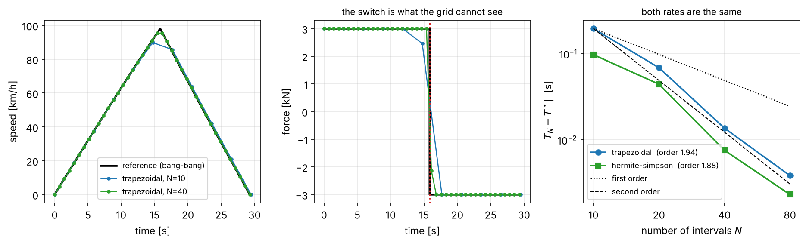

Unit 9 – Numerical Methods in Optimal Control
4SC000 Optimal Control and Reinforcement Learning
1 Where this unit sits in the course
Everything solved exactly so far rested on one of two pieces of good fortune. Units 1 to 4 computed the cost-to-go by dynamic programming over a state space small enough, or discretized finely enough, to enumerate. Units 5 and 6 had dynamics that were linear and a cost that was quadratic, which is the one nonlinear-looking problem with a closed form: the Riccati recursion. Unit 7 discretized a continuous problem and minimized over the controls by gradient descent, and Unit 8 solved a quadratic program at every step.
Real systems are usually neither small nor linear. A vehicle, a robot arm, an aircraft: continuous states, nonlinear dynamics, a cost that is whatever the application says it is, and constraints on both states and inputs. The Riccati recursion no longer applies, and the state space is far too large to discretize – Unit 7’s curse of dimensionality, in the form that cannot be argued away.
This unit builds the general-purpose machinery. Given a nonlinear model and a cost, compute an optimal trajectory numerically; and, with DDP/iLQR, a local feedback policy as well. None of it is exact, none of it is guaranteed to find the best answer, and all of it works.
1.1 Two philosophies
Every method here is one of two things.
Direct methods discretize first and optimize second. The optimal control problem is turned into a finite-dimensional nonlinear program – finitely many decision variables, finitely many constraints – and handed to an NLP solver. What is optimized is an approximation of the original problem.
Indirect methods optimize first and discretize second. Pontryagin’s minimum principle gives necessary conditions for optimality: a two-point boundary value problem in the states and the costates. That boundary value problem is then solved numerically. What is optimized is the original problem; what is approximated is the solution of the resulting equations.
Indirect methods characterize the optimum more sharply, since the necessary conditions are exact. They are also harder to set up – the costate equations must be derived by hand for each problem – and notoriously sensitive to the initial guess for the costates, which are quantities with no physical meaning that one can guess well. Direct methods dominate in practice and take up most of this unit. The last section shows one problem where the indirect route wins outright, and it is worth the wait.
1.2 The landscape
Among direct methods there are two families: shooting, in single and multiple variants, and collocation, in trapezoidal, Hermite-Simpson and pseudospectral variants. Among indirect methods there is Pontryagin’s minimum principle plus a boundary value problem, itself solved by shooting or collocation applied to the costate system. And standing slightly apart are the DP-based methods, differential dynamic programming and its simplification iLQR, which exploit the sequential structure of the problem directly instead of handing it to a solver that knows nothing about it.
This unit covers direct shooting, direct collocation, and DDP/iLQR, and then puts them to work on two problems that cannot be done by hand.
1.3 Where this fits
The thread back through the course is worth making explicit:
- Unit 5 gave the exact Riccati recursion, for linear dynamics and quadratic cost only. Section 4 below is that recursion applied over and over to local approximations.
- Unit 7 substituted the dynamics into the cost and minimized over the controls alone. Section 2 shows that this is single shooting, specialized to the linear case.
- Unit 8 solved MPC as a quadratic program, still with linear dynamics – or dynamics re-linearized at every step, in nonlinear MPC. Section 4 shows what that re-linearization looks like from the inside.
So this unit is not a new direction so much as the general machinery underneath several things the course has already done in special cases.
1.4 A word on solvers
Once an optimal control problem has been transcribed into a nonlinear program, it is solved by a general-purpose numerical optimization routine. The two standard families are sequential quadratic programming (SQP) and interior-point methods. Both, at their core, repeatedly build a local model of the problem – quadratic, for SQP – and take a Newton-type step, which is exactly what the Levenberg-Marquardt solver in this unit’s companion code does.
In practice one uses a mature package. The code accompanying these notes rolls its own, in plain numpy, purely so that nothing of the mechanics is hidden. The one exception is the module behind the two case studies, which needs a real SQP solver for reasons that are themselves part of the lesson.
2 Direct shooting
2.1 Single shooting is Unit 7’s static optimization
Take the controls \(u_0,\dots,u_{h-1}\) as the only decision variables. Given them, the states follow by forward simulation, \(x_{k+1}=f(x_k,u_k)\) from the known \(x_0\), so each state is a function of the controls that preceded it, \(x_k=\phi_k(u_0,\dots,u_{k-1})\), and the cost becomes a function of \(u\) alone:
\[J(u)=\sum_{k=0}^{h-1}g\big(\phi_k(u),u_k\big)+g_h\big(\phi_h(u)\big).\]
This is single shooting: guess a control sequence, shoot a trajectory from \(x_0\), see where it lands, adjust.
If that sounds familiar, it should. Unit 7 did exactly this for the linear model \(x_{k+1}=Ax_k+Bu_k\) with a quadratic cost: substitute the dynamics into the cost, obtain an unconstrained problem in \(u\), and descend. There \(\phi_k\) was linear, so \(J(u)\) was exactly quadratic and gradient descent behaved beautifully. Here \(f\) is general, \(\phi_k\) is not linear, \(J(u)\) is not quadratic, and even the gradient takes more care.
2.2 Computing the gradient
Differentiate through the simulation by the chain rule. Write
\[A_k=\frac{\partial f}{\partial x}(x_k,u_k), \qquad B_k=\frac{\partial f}{\partial u}(x_k,u_k),\]
which are now state- and time-varying because \(f\) is nonlinear. The sensitivity of the states to the controls obeys a recursion that runs alongside the simulation itself,
\[\frac{\partial x_{k+1}}{\partial u}=A_k\frac{\partial x_k}{\partial u}+B_ke_k^\intercal, \qquad \frac{\partial x_0}{\partial u}=0,\]
where \(e_k\) is the \(k\)-th standard basis vector. Propagating it forward gives \(\partial x_h/\partial u\), and with it \(\nabla J(u)\). It is Unit 7’s rollout_grad with \(A\) and \(B\) allowed to vary.
2.3 From a constraint to a penalty
The swing-up problem used throughout this unit carries a hard terminal condition, \(x_h=x_{\text{target}}\), which makes single shooting a constrained problem. The companion code softens it to a penalty,
\[J(u)+\rho\|x_h(u)-x_{\text{target}}\|^2,\]
and applies a damped Gauss-Newton (Levenberg-Marquardt) step built directly from the sensitivity above. A production solver would keep the constraint hard and use SQP or an interior-point method. The penalty view is enough to expose the numerical problem that follows – and, as the collocation section shows, it has a sting of its own.
2.4 Example: the pendulum swing-up
The running example of this unit is the minimum-effort swing-up of a torque-driven pendulum,
\[\dot x=\begin{bmatrix}\dot\theta\\-\sin\theta+u\end{bmatrix}, \qquad x(0)=\begin{bmatrix}0\\0\end{bmatrix}, \qquad x(T)=\begin{bmatrix}\pi\\0\end{bmatrix}, \qquad \min\int_0^Tu^2\,dt,\]
over \(T=6\) s with \(h=60\) steps. The pendulum starts hanging down at rest and must end inverted at rest, using as little torque as possible. Single shooting reaches \(\theta_h=3.138\) against a target of \(\pi=3.1416\), at an effort of \(2.31\).

That the methods split into two groups rather than agreeing is the first important fact about every method in this unit, and Section 4 returns to it once there is enough machinery to explain it.
2.5 Why single shooting struggles
Shooting works by propagating sensitivities forward, which means the per-step Jacobians \(A_k\) are multiplied together along the whole horizon. Any growing mode of the linearized dynamics is therefore raised to the power of the number of steps. The pendulum’s upright equilibrium is unstable, and the swing-up trajectory spends much of its horizon near the top, so the sensitivity of the final state to the early controls grows: a nudge at the start is amplified all the way to the end.
The symptom is the condition number of \(\partial x_h/\partial u\), which grows with the horizon:

An ill-conditioned Jacobian makes Newton-type steps numerically fragile: the solver is trying to invert a matrix that is nearly singular in some directions, and the step it computes is dominated by whatever noise is in the derivatives. This is precisely the failure mode multiple shooting exists to avoid.
Suppose you compute the condition number of \(\partial x_h/\partial u\) at the zero control sequence rather than at the solution. You will find it is about \(1.05\), essentially independent of the horizon length – no growth at all, apparently contradicting Fig. 2. Explain the discrepancy, and say which of the two numbers answers the question the figure is asking.
At \(u\equiv0\) the pendulum hangs at \(\theta=0\) and never moves. That is its stable equilibrium: linearizing there gives \(\ddot{\delta\theta}=-\delta\theta\), an oscillator, whose per-step Jacobians are rotations. Rotations have unit singular values, so multiplying sixty of them together amplifies nothing, and the condition number stays near one no matter how long the horizon.
Along the solved trajectory the pendulum passes through and settles at \(\theta=\pi\), the unstable equilibrium, where linearizing gives \(\ddot{\delta\theta}=+\delta\theta\) and perturbations grow like \(e^{t}\). Measured there, the condition numbers are
| \(T\) | \(6\) s | \(9\) s | \(12\) s |
|---|---|---|---|
| single shooting | \(27.3\) | \(110.1\) | \(104.1\) |
| one segment of six | \(3.4\) | \(2.3\) | \(1.7\) |
which is Fig. 2.
So the second number is the relevant one, and the reason is worth keeping: conditioning is a property of the trajectory, not of the problem. The same method, on the same system, is well conditioned in one part of the state space and badly conditioned in another. A diagnostic evaluated at a convenient point rather than at the operating point can reassure you about nothing at all.
2.6 Multiple shooting
The remedy is to stop simulating so far. Break the horizon into \(S\) segments of \(m=h/S\) steps, and give each segment its own free initial state \(z_i\) as a decision variable, simulated forward under its own controls. The decision vector becomes \(u_0,\dots,u_{h-1}\) together with \(z_1,\dots,z_{S-1}\), with \(z_0:=x_0\) fixed, and the segments are tied together by continuity constraints: the simulated end of segment \(i\) must equal \(z_{i+1}\). These are the “defects”, and they are the same object that collocation is built from.
Why this is better conditioned is immediate once stated. Sensitivities now only ever propagate within a segment. A control in segment three has no direct effect on segment six’s defect; it acts only indirectly, through states that are decision variables rather than simulated quantities. Each segment is short, so its own Jacobian stays well conditioned however long the overall horizon is – the flat lower curve in Fig. 2.
The price is a larger problem: more decision variables and more constraints. But the resulting nonlinear program is sparse, since each defect touches only two segments’ worth of variables, and much better behaved numerically. On the swing-up with \(S=6\), multiple shooting reaches \(\theta_h=3.140\) at an effort of \(2.22\).
The rule of thumb: single shooting is fine for short horizons and dynamics that are mildly nonlinear or stable. Multiple shooting, or collocation, is the default otherwise.
2.7 What shooting is good for
Shooting keeps the nonlinear program small – only the controls, or the controls plus a handful of segment states – which is attractive when simulations are cheap and the variable count matters. Both variants still require simulating the dynamics, which can be expensive or numerically delicate for stiff systems. Collocation, next, avoids simulation altogether.
3 Direct collocation
3.1 Direct transcription
Parametrize both states and controls at every node of a time grid \(t_0,\dots,t_N\) with \(N\) intervals of length \(\tau\). The dynamics no longer determine the states; instead they appear as equality constraints tying consecutive nodes together, obtained by applying a numerical quadrature rule to
\[x(t+\tau)-x(t)=\int_t^{t+\tau}f(x,u)\,dt.\]
Everything is optimized simultaneously. This is why collocation programs are much larger than shooting programs – and also why they tend to be much better conditioned, since there are no long simulation chains, and why state and path constraints are trivial to impose: the states are variables, so a bound on them is a bound on a variable.
3.2 Trapezoidal collocation
Approximate the integral by the trapezoidal rule. The defect constraint, for each \(k\in\{0,\dots,N-1\}\), is
\[x_{k+1}-x_k-\frac{\tau}{2}\big(f(x_k,u_k)+f(x_{k+1},u_{k+1})\big)=0,\]
and the cost is discretized by the same rule,
\[J\approx\sum_{k=0}^{N-1}\frac{\tau}{2}\big(g(x_k,u_k)+g(x_{k+1},u_{k+1})\big)+g_h(x_N).\]
It is second-order accurate and simple enough to write by hand: the decision vector, the defects and the cost all follow from those two formulas.
3.3 Hermite-Simpson collocation
Interpolate the state within each interval by the cubic Hermite polynomial matching \(x_k,f_k\) at \(t_k\) and \(x_{k+1},f_{k+1}\) at \(t_{k+1}\). Its value at the midpoint is
\[x_{\text{mid}}=\frac{x_k+x_{k+1}}{2}+\frac{\tau}{8}\big(f(x_k,u_k)-f(x_{k+1},u_{k+1})\big), \qquad u_{\text{mid}}=\frac{u_k+u_{k+1}}{2}.\]
Collocate the dynamics at that midpoint and apply Simpson’s rule:
\[x_{k+1}-x_k-\frac{\tau}{6}\big(f(x_k,u_k)+4f(x_{\text{mid}},u_{\text{mid}})+f(x_{k+1},u_{k+1})\big)=0.\]
Two extra function evaluations per interval buy two extra orders of accuracy. One warning that the case studies make concrete: the cost must be integrated with the matching quadrature – Simpson’s rule, on the same midpoint – or the objective is only second-order accurate and the scheme’s advantage is thrown away.
3.4 What the penalty weight actually controls
Here the companion code has something to teach that the slides do not say, and it is worth more than the accuracy comparison it displaces.
Run both schemes on the swing-up at \(N=60\) and they report an effort of about \(2.03\), below multiple shooting’s \(2.22\). Refine the grid and the reported cost keeps falling:

Two things in Fig. 3 should bother a careful reader. The curve never flattens: a converging quantity levels off, and this one is still falling at the right-hand edge. And the two schemes are indistinguishable, when one is supposed to be two orders more accurate than the other.
The honest test is to throw away the node values, keep only the control, and simulate it through the true dynamics. Doing that to the trapezoidal solution at the default weight \(\rho=300\):
| reported | simulated | \(\theta(T)\) simulated | max defect | |
|---|---|---|---|---|
| \(\rho=300\) | \(2.0300\) | \(2.0284\) | \(1.3841\) | \(3.5\times10^{-3}\) |
| \(\rho=3000\) | \(2.2177\) | \(2.2161\) | \(2.9294\) | \(3.6\times10^{-4}\) |
The control that was supposed to bring the pendulum to \(\theta=\pi\) leaves it less than halfway there. The attractive cost of \(2.03\) is not the cost of a swing-up at all; it is the cost of a trajectory that does not swing up, bought by letting the defects drift. At the tighter weight the reported effort rises to \(2.2177\) – which is where multiple shooting independently landed, \(2.2194\). That agreement is the sign that the tighter weight is the right one.
Redone at \(\rho=3000\) the refinement sweep behaves as a convergence study should, settling towards about \(2.22\):
| \(N\) | \(10\) | \(20\) | \(30\) | \(40\) |
|---|---|---|---|---|
| trapezoidal, \(\rho=300\) | \(2.2493\) | \(2.1811\) | \(2.1373\) | \(2.0995\) |
| trapezoidal, \(\rho=3000\) | \(2.2836\) | \(2.2473\) | \(2.2348\) | \(2.2277\) |
| Hermite-Simpson, \(\rho=3000\) | \(2.2831\) | \(2.2444\) | \(2.2330\) | \(2.2266\) |
The two schemes are still almost on top of each other, and that is the real lesson. In a penalty formulation it is the penalty weight, not the order of the quadrature, that sets the accuracy. Hermite-Simpson’s fourth order cannot show through an error floor imposed by \(\rho\). The case studies in Section 5 impose the defects as genuine equality constraints inside an SQP solver, and there the fourth order appears exactly as promised – Hermite-Simpson at \(N=20\) matching trapezoidal at \(N=80\).
At fixed \(\rho\), the reported optimal effort decreases monotonically as \(N\) grows, and never settles. Explain why, and say whether the true optimal cost of the continuous problem is above or below the numbers in the first row of the table.
Because with penalized defects the discrete problem is a relaxation of the continuous one, not an approximation of it in the usual sense. The optimizer is not required to satisfy the dynamics; it is only charged \(\rho\|\text{defect}\|^2\) for violating them, and it will violate them whenever the effort saved exceeds the charge.
The size of that violation per interval is set by \(\rho\) and is roughly constant – about \(3.5\times10^{-3}\) at every \(N\) in the table. So the number of intervals over which the trajectory is allowed to drift grows with \(N\), the total drift grows with it, and the achievable “cost” falls. Refining the grid does not improve the answer; it buys the optimizer more places to cheat.
The true optimal cost is therefore above those numbers: the relaxation can only report a value at or below the true optimum. This is worth contrasting with the second case study in Section 5, where the errors all point the other way – and the last quick exercise of these notes asks why.
3.5 Shooting against collocation
The trade is clean. Shooting has few decision variables and a dense Jacobian, but its conditioning degrades with horizon length and simulation errors compound. Collocation has many decision variables, but its Jacobian is sparse and banded – each defect touches only its own two nodes – stays well conditioned however long the horizon, and admits state and path constraints at any node for free.
In practice, general-purpose collocation solvers exploit that sparsity directly, with interior-point or SQP methods built on sparse linear algebra, which makes collocation the default choice in most modern trajectory-optimization software even though the raw problem is far larger.
3.6 Pseudospectral collocation
One variant deserves naming. Instead of a local, piecewise low-order polynomial on each interval, use a single global polynomial – a Legendre or Chebyshev basis – over the whole horizon, collocated at a special set of nodes (Gauss, Radau or Lobatto points, clustered near the endpoints).
For smooth problems this gives spectral convergence: error falling faster than any polynomial rate in the number of nodes, often reaching high accuracy with a handful of nodes where a local scheme would need hundreds. It is the basis of production aerospace tools such as GPOPS-II.
The caveat is the same one the second case study will make vividly: a global polynomial is a poor fit when the optimal trajectory itself has kinks, which is exactly what active inequality constraints produce.
4 Differential dynamic programming and iLQR
4.1 The idea
Shooting and collocation both treat the problem as a generic nonlinear program and hand it to a solver that knows nothing about its structure. But the structure is known, and the course has already exploited it: Unit 5’s Riccati recursion solves the linear-quadratic problem exactly by a single backward dynamic-programming pass, with no iterative solve at all.
Can something like that be had for a nonlinear problem? Not exactly – there is no closed form. But it can be iterated: linearize and quadratize around a nominal trajectory, solve the resulting linear-quadratic problem exactly by Riccati, use the answer to improve the nominal trajectory, and repeat.
Concretely, starting from a nominal \((\bar x_k,\bar u_k)\), for instance all-zero controls simulated forward, each iteration does four things. Linearize the dynamics, \(A_k=\partial f/\partial x\) and \(B_k=\partial f/\partial u\) at \((\bar x_k,\bar u_k)\). Quadratize the cost about the same point. Solve the resulting time-varying linear-quadratic problem exactly by a backward Riccati-like pass, which yields a local feedback policy \(\delta u_k=k_k+K_k(x_k-\bar x_k)\). Forward-simulate under that policy, with a line search, to obtain an improved nominal trajectory.
This is DDP with the second-order dynamics terms dropped. Full DDP keeps \(\partial^2f/\partial x^2\) and its relatives, converging faster locally at the price of more derivatives.
4.2 The backward pass
Take the value function to be locally quadratic about \(\bar x_k\), \(V_k(\delta x)\approx V_k+V_{x,k}^\intercal\delta x+\tfrac12\delta x^\intercal V_{xx,k}\delta x\). At each stage define
\[Q_x=g_x+A_k^\intercal V_{x,k+1}, \qquad Q_u=g_u+B_k^\intercal V_{x,k+1},\]
\[Q_{xx}=g_{xx}+A_k^\intercal V_{xx,k+1}A_k, \qquad Q_{uu}=g_{uu}+B_k^\intercal V_{xx,k+1}B_k, \qquad Q_{ux}=g_{ux}+B_k^\intercal V_{xx,k+1}A_k.\]
Minimizing the local model over \(\delta u\) gives the feedforward and feedback gains
\[k_k=-Q_{uu}^{-1}Q_u, \qquad K_k=-Q_{uu}^{-1}Q_{ux},\]
and the value function updates as
\[V_{x,k}=Q_x-K_k^\intercal Q_{uu}k_k, \qquad V_{xx,k}=Q_{xx}-K_k^\intercal Q_{uu}K_k.\]
Compare this with Unit 5. The structure is identical, with \(Q_{xx},Q_{uu},Q_{ux}\) in the role of \(Q\) and \(R\) – except that they are built from local linearizations and rebuilt from scratch at every iteration, rather than solved once for a globally linear system.
4.3 The forward pass
Simulate \(x_{k+1}=f(x_k,u_k)\) from \(x_0\) with
\[u_k=\bar u_k+\alpha k_k+K_k(x_k-\bar x_k).\]
The feedback term keeps the new trajectory near the region where the linearization is valid; the feedforward term is the actual update, scaled by a step size \(\alpha\in(0,1]\). Backtrack on \(\alpha\) – try \(1,\tfrac12,\tfrac14,\dots\) – until the new trajectory’s cost is genuinely lower. It is the line search inside Levenberg-Marquardt, applied to a whole feedback policy instead of a single step.
4.4 How fast it converges
On the swing-up, iLQR converges from an all-zero initial guess in about four or five full iterations:

The scale on Fig. 4 is logarithmic, and the drop is far steeper than the Levenberg-Marquardt solves that shooting and collocation need, and it is a direct benefit of exploiting the dynamic-programming structure instead of handing a dense nonlinear program to a general-purpose solver.
4.5 Which optimum, and why
Now back to Fig. 1, and the fact postponed from Section 2. iLQR’s \(\theta(t)\) dips backward before swinging up, while multiple shooting and both collocation schemes go straight up.
It is tempting to read this as a weakness of iLQR. It is not. Single shooting does exactly the same thing, landing on a cost of \(2.3117\) indistinguishable from iLQR’s – the two curves in Fig. 1 lie on top of one another, which is why only one dipping trajectory is visible.
What separates the two groups is not the method but the initial guess. Single shooting and iLQR both start from \(u\equiv0\) and nothing else. Multiple shooting and collocation additionally seed a state trajectory running from \(x(0)\) to \(x(T)\) – a guess that already “knows” the pendulum is supposed to end up at the top. Warm-start either of the first two from the second group’s answer and they find the other optimum as well:
| from \(u\equiv0\) | warm started | |
|---|---|---|
| single shooting | \(2.3117\) | \(2.2371\) |
| iLQR | \(2.3117\) | \(2.2371\) |
Both land on the same two numbers, which is the clearest possible evidence that there are two local optima here and that the starting point alone decides which one is found.
The backward swing costs \(2.3117\) and the direct one \(2.2371\) – about \(3\%\) more. Is the dipping trajectory a failure of the solver? And given that all five methods are local, how would you organize a solve in practice so as not to depend on luck?
It is not a failure. The dipping trajectory is a genuine local optimum of a genuinely nonconvex problem: every method that finds it reports the same cost to four decimal places, and no small perturbation improves it. Swinging backwards first to build momentum is a real strategy, and on a pendulum with a tighter torque limit it would be the only one. Here it simply happens to cost a little more.
Nor is it obvious from the outside which basin a solver will land in. Both guesses – “no control at all” and “a straight line from start to target” – are perfectly natural, and they give different answers.
The practical recipe follows from that. Do not rely on one solve from one guess. Solve a coarse problem first, where the grid is small, the solve is cheap and several initial guesses can be tried, then warm-start the fine solve from the best coarse answer. This is also why collocation is often the first thing run even when the final answer is wanted from iLQR: collocation’s initial guess is a state trajectory, which is a much easier thing to guess well than a control sequence. And when there is physical insight about what the answer should look like, it belongs in the initial guess, not in a comment.
4.6 Where this leads
Three connections are worth making explicit.
Back to Unit 5. The backward pass is the Riccati recursion, applied to a linearization around a nominal trajectory rather than to a globally linear model.
Back to Unit 8. Run the forward pass for a single step, then re-linearize at the freshly measured state and repeat. That is receding-horizon iLQR, which is essentially nonlinear MPC. Unit 8 solved one quadratic program per step because its dynamics were linear; here the “quadratic program” is the by-product of one backward pass. The backward pass is a local, model-based approximation of one step of the Bellman recursion – the same computation, in spirit, as Unit 8’s rollout and approximate dynamic programming, carried out analytically rather than by enumeration.
Forward to Unit 10. iLQR still needs to know \(f\), \(g\) and \(g_h\) exactly, and to differentiate them. What if the dynamics or the cost are unknown, and all that is possible is to interact with the system and observe what happens? That is precisely where the course goes next. Keep the backward-pass parallel in mind: much of reinforcement learning reads as the same dynamic-programming idea, learned from data instead of computed from a known model.
4.7 What iLQR is good for
Very fast local convergence, because it exploits the structure; a natural bridge to both MPC and reinforcement learning; and a feedback policy rather than merely an open-loop trajectory, which the direct methods do not provide. Against that: it is only locally convergent, and in the simplified form shown here it does not handle hard inequality constraints the way collocation does natively.
5 Two case studies
The pendulum is small and friendly. The two problems that close this unit are not, and they break in opposite ways, which is the point of having both.
Both use the same system: an electric vehicle, modelled longitudinally as a point mass with aerodynamic drag, rolling resistance and road grade,
\[\dot s=v, \qquad m\dot v=F-\tfrac12\rho C_dA\,v|v|-mgC_r-mg\,\gamma(s),\]
with \(m=1600\) kg, \(C_dA=0.60\) m\(^2\), \(C_r=0.010\), \(|F|\le3\) kN, \(v\le30\) m/s, and \(\gamma(s)\) the road gradient. The battery is asymmetric: delivering mechanical power \(P=Fv\) costs \(P/\eta_d\) with \(\eta_d=0.90\), while recovering it returns only \(\eta_r|P|\) with \(\eta_r=0.65\). The round trip is \(\eta_d\eta_r=0.585\), and that single number is what makes the first problem interesting at all.
A word on the solver, which is itself a lesson. The three pendulum modules are deliberately numpy-only, rolling their own Levenberg-Marquardt on a penalized least-squares residual. That works because the pendulum’s cost is a sum of squares and its only constraints are equalities. Neither is true here: battery energy is not a sum of squares and can be negative, the trip time is a decision variable, and both problems carry genuine inequality constraints on speed and force. So the case studies use a real SQP solver. When a problem outgrows the hand-rolled machinery, that is information about the problem, not a defect of the exposition.
A second lesson arrives before any answer does. Written in SI units these problems have decision variables spanning four orders of magnitude – position \(\sim2000\), speed \(\sim17\), force \(\sim1500\) – and SQP simply fails, exiting on its iteration limit with the dynamics still violated. Every transcription here therefore works in non-dimensional variables \(s/L\), \(v/v_{\max}\), \(F/F_{\max}\), with the defects scaled to match. Badly scaled transcriptions are among the commonest reasons a trajectory optimization “does not work”.
5.1 Energy-optimal driving
Cover a \(2000\) m route in a fixed \(120\) s – so \(60\) km/h on average – entering and leaving at that average speed, over a hill \(12\) m high spread across \(800\) m, using as little battery energy as possible:
\[\min_{F(\cdot)}\int_0^{120}P_{\text{batt}}\big(F(t),v(t)\big)\,dt \quad\text{subject to the dynamics},\ s(0)=0,\ s(T)=2000,\ v(0)=v(T)=\tfrac{2000}{120}.\]
Before solving anything, it is worth seeing why there is a problem at all. Suppose regeneration were perfect, \(\eta_d=\eta_r=1\). The energy spent is then the change in kinetic energy, plus the change in potential energy, plus the dissipation \(\int(F_{\text{drag}}+F_{\text{roll}})v\,dt\). The route’s net elevation change is zero and the end speeds are fixed, so the first two vanish – the hill is free – and minimizing \(\int(\tfrac12\rho C_dAv^3+mgC_rv)\,dt\) at fixed \(\int v\,dt\) and fixed \(T\) gives constant speed, by convexity.
So with a perfect battery, cruise control is already optimal and there is nothing to compute. Everything interesting in this problem comes from \(\eta_d\eta_r<1\).

The baseline, holding the average speed throughout, uses \(0.6158\) MJ. The optimum uses \(0.5724\) MJ – about \(7\%\) less, for the same route in the same time. The speed eases from \(60\) km/h to \(58.7\) on the flat approach, falls to \(54.3\) at the crest, rises to \(66.3\) at the foot of the descent, and returns to \(60\) at the end.
The single most informative feature is in the bottom panel of Fig. 5: the optimal trajectory never brakes. Its force stays at or above \(+10\) N throughout, while the baseline brakes at \(-483\) N on the descent, pushing energy through a round trip that returns \(58.5\%\) of it. The optimizer’s answer is to arrive at the crest slower and let gravity do the accelerating, converting potential energy straight into kinetic energy – the one conversion in this vehicle that is lossless. It all but shuts the motor off from about \(950\) m, holding \(25\) N at the crest against the baseline’s \(1.0\) kN, and coasts over the top.
Nothing told it to do that. There is no coasting rule in the formulation and no “lift off before the crest” heuristic. There is a model, a set of constraints, and a cost.
5.2 Trusting the answer
The lesson of Section 3 returns, in a setting where it is easy to be fooled. The number an NLP reports is its own discretization’s estimate of the cost, computed on its own grid by its own rule. It is not the cost of the trajectory the vehicle would follow. Simulating each solution’s force schedule through the true dynamics gives an honest score – and asks whether the route was finished at all:
| Scheme | \(N\) | Solver’s value [MJ] | Simulated [MJ] | Misses the finish by |
|---|---|---|---|---|
| Trapezoidal | \(20\) | \(0.5647\) | \(0.5604\) | \(-21.4\) m |
| Trapezoidal | \(40\) | \(0.5706\) | \(0.5696\) | \(-4.7\) m |
| Trapezoidal | \(80\) | \(0.5717\) | \(0.5729\) | \(-0.6\) m |
| Hermite-Simpson | \(20\) | \(0.5716\) | \(0.5714\) | \(-1.0\) m |
| Hermite-Simpson | \(40\) | \(0.5736\) | \(0.5736\) | \(+0.1\) m |
| Hermite-Simpson | \(80\) | \(0.5725\) | \(0.5724\) | \(-0.5\) m |
Trapezoidal at \(N=20\) reports the best energy of all – by quietly stopping twenty-one metres short. A cost that beats the others because the trajectory is infeasible is the classic way to be fooled by a coarse grid.
And here, where the defects reach the solver as hard equality constraints rather than as penalties, the order of the scheme finally shows: Hermite-Simpson at \(N=20\) is about as good as trapezoidal at \(N=80\), for a quarter of the variables. That is what Section 3’s comparison was unable to see.
5.3 Time-optimal driving
Same vehicle, now on the flat opening \(400\) m of the route, from rest to rest, as fast as possible:
\[\min_{F(\cdot),\,T}\ T \quad\text{subject to the dynamics},\ s(0)=0,\ v(0)=0,\ s(T)=400,\ v(T)=0,\ |F|\le F_{\max}.\]
Two things change. First, the horizon is now a decision variable, which none of the methods so far was set up for. The standard fix is to normalize time: let \(\sigma=t/T\in[0,1]\) be the independent variable, so that
\[\frac{dx}{d\sigma}=T\,f(x,F),\]
and \(T\) joins the vector of unknowns. Every defect is then multiplied by \(T\), and a fixed grid in \(\sigma\) stretches or shrinks with the solution. Everything else is unchanged.
Second, and more consequentially, the solution is not smooth. The cost \(T=\int_0^T1\,dt\) does not depend on \(F\) at all, so the Hamiltonian is linear in the input, and Pontryagin’s minimum principle – the indirect family, finally earning its keep – puts the optimal force on a bound wherever the switching function is nonzero:
\[F^\star(t)=-F_{\max}\operatorname{sign}\big(\lambda_v(t)\big).\]
Here the switching function crosses zero exactly once, so there is no singular arc and the answer is bang-bang with a single switch: accelerate flat out, then brake flat out. The peak speed reached, \(98.1\) km/h, stays under the \(108\) km/h limit, so that constraint never binds and no cruise phase appears.
That collapses an infinite-dimensional problem to one unknown, the switching time. A bracketed root find on the distance covered gives
\[T^\star=29.2828\ \text{s}, \qquad t_{\text{switch}}=15.8441\ \text{s}\ (54.1\%),\]
unchanged to nine digits as the integration step goes from \(10^{-2}\) to \(10^{-3}\) s. When the structure of the answer is known, almost nothing needs discretizing – and this is the yardstick against which the direct methods can be scored.

| Scheme | \(N=10\) | \(N=20\) | \(N=40\) | \(N=80\) | Fitted order |
|---|---|---|---|---|---|
| Trapezoidal | \(+0.1972\) | \(+0.0692\) | \(+0.0137\) | \(+0.0039\) | \(1.94\) |
| Hermite-Simpson | \(+0.0981\) | \(+0.0445\) | \(+0.0076\) | \(+0.0023\) | \(1.88\) |
Errors \(T_N-T^\star\) in seconds; multiple shooting with eight segments and \(N=40\) gives \(+0.0085\).
The right-hand panel of Fig. 6 makes the comparison with the energy-optimal problem plain. There, Hermite-Simpson was worth a factor of four in grid size. Here it is worth a factor of about two in the constant and nothing in the rate – \(1.88\) against \(1.94\). Fourth-order accuracy is a statement about smooth solutions, and this solution is not one. The remedy is not a finer grid but a better parameterization: make the switching time itself a variable and put a grid point on it, which is precisely what the one-unknown reference above does.
Every entry in the table above is positive – the computed minimum time always exceeds the true one. In Section 3 every entry pointed the other way: the reported effort was always below the true optimum, and fell further as the grid was refined. Both are discretizations of continuous problems, solved by the same kinds of method. Why do their errors have opposite signs?
Because one discretization is a restriction of the continuous problem and the other is a relaxation of it.
In the time-optimal problem the defects are imposed on the SQP solver as hard equality constraints, and the control is confined to whatever the grid can represent – here, piecewise linear between nodes. Every discrete solution is therefore a genuine (or very nearly genuine) trajectory of the system, but not every trajectory of the system is available to the discrete problem. The feasible set has shrunk, so the optimum can only get worse: \(T_N\ge T^\star\), with equality only in the limit. The optimal force is discontinuous, no piecewise-linear function on a finite grid can reproduce it, and the smeared version is slower.
In the penalized collocation of Section 3 the defects are not imposed at all – they are merely charged for. Trajectories that the system cannot actually follow are admitted to the feasible set, which has therefore grown, and an optimum over a larger set can only be better. Hence a reported cost below the truth, falling further as more intervals offer more places to drift.
Two practical consequences. A restriction gives a one-sided bound you can trust: the time it reports is achievable, give or take the constraint tolerance. A relaxation gives a bound in the direction that flatters it, and a number from a relaxation is never evidence that anything works – which is why the only real test, in both halves of this unit, was to simulate the answer.
6 Summary
Every method in this unit turns an infinite-dimensional problem into a finite one, and the choices differ in what is discretized.
Direct methods discretize first and optimize second. Shooting eliminates the states by simulation and optimizes over the controls alone – exactly what Unit 7 was already doing, generalized to nonlinear dynamics. It keeps the problem small, but propagating sensitivities along the whole horizon makes the Jacobian ill-conditioned when the dynamics have a growing mode. Multiple shooting cuts the horizon into segments with free initial states and continuity constraints, so sensitivities propagate only within a segment; the problem is larger but sparse and far better behaved.
Collocation does not simulate at all. States and controls at every node are decision variables, and the dynamics appear only as defect constraints obtained from a quadrature rule. Trapezoidal is second-order and simple; Hermite-Simpson is fourth-order for two extra function evaluations per interval; pseudospectral schemes replace the local polynomial by a global one and converge spectacularly on smooth problems and poorly on kinked ones. Collocation’s Jacobian is sparse and well conditioned however long the horizon, and path constraints are free, which is why it is the default in most modern software.
DDP and iLQR exploit the sequential structure instead of hiding it, iterating Unit 5’s Riccati recursion on local linearizations. They converge in a handful of iterations and return a feedback policy, not just a trajectory – and they bridge directly to Unit 8’s MPC and to the reinforcement learning of Unit 10, where the same Bellman recursion is learned from data rather than computed from a known model.
Indirect methods optimize first. They are harder to set up and rarely used, until a problem’s structure is known well enough to collapse it – as in the time-optimal case study, where Pontryagin’s minimum principle reduced the whole problem to a single unknown and beat every discretization by orders of magnitude.
Four things are worth carrying out of this unit, and none of them is a method.
All of these find only local optima. Which one you get is decided by the initial guess, not by the method: single shooting and iLQR, started from zero controls, find a different – and \(3\%\) worse – swing-up than multiple shooting and collocation, which are seeded with a state trajectory. A good initial guess is part of the problem specification.
Scaling decides whether the solve works at all. In SI units the case studies’ variables span four orders of magnitude and SQP fails outright on them.
The quadrature must match the scheme. A fourth-order defect with a second-order cost integral is a second-order method that converges quickly to the wrong number.
And the value an optimizer reports is not the cost of the trajectory it returns. It is computed on the optimizer’s own grid, by its own rule, subject to its own tolerances – and whether it lands above or below the truth depends on whether the discretization restricted the problem or relaxed it. The only way to find out is to simulate the answer.